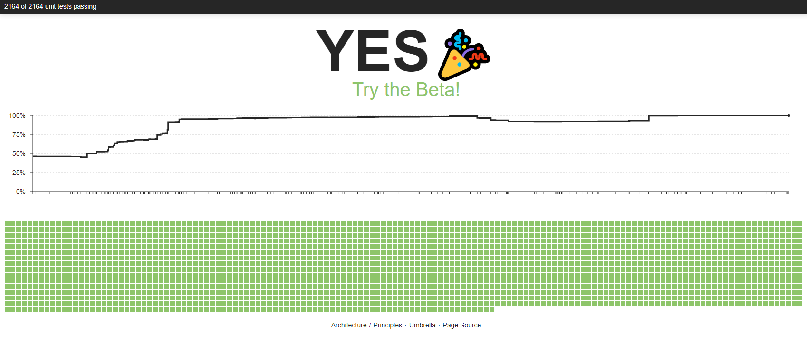
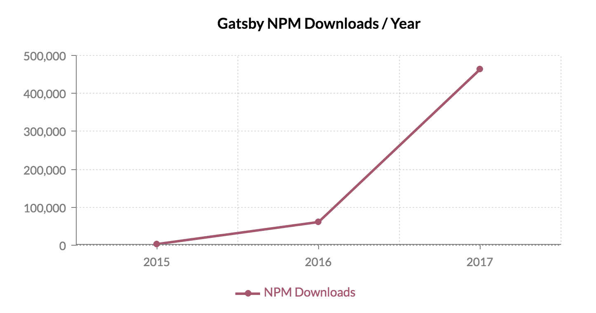
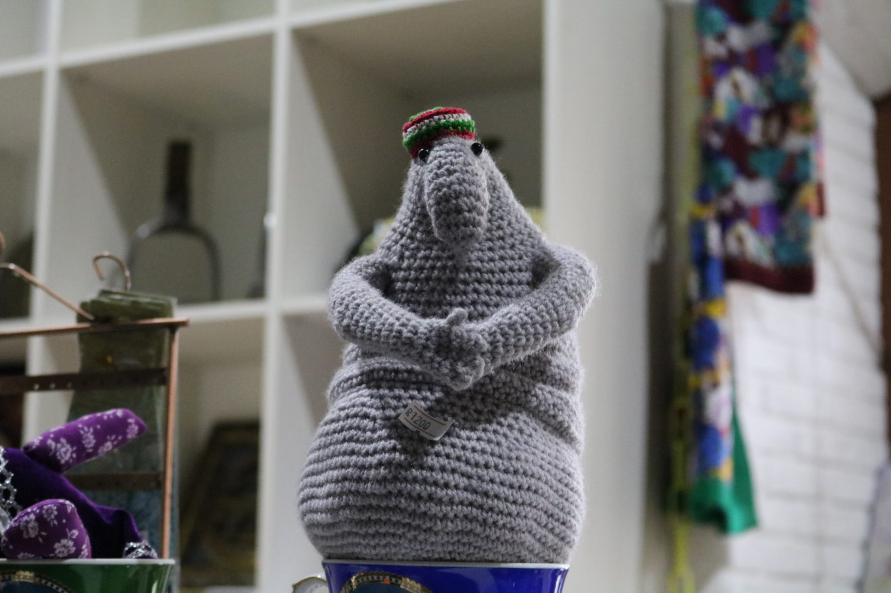

Известия
Авторы: Вероника Самохина и Михаил Шатихин

React 16 Beta
Use Map and Set, <IE11 (
babel-polyfill
)
Returning arrays from render
componentDidCatch (
Error Handling
)
...
Explore React Fiber
Читать
Слушать
Update CSS spec
DISPLAY LEVEL 3
font-display
Gatsby 1.0
GraphQL
Service worker and offline support
Route-based code splitting
...
Читать

Updates
Webstorm
Chrome, FF
ES8 Released
npm 5
Emotion
The Next Generation of CSS-in-JS
High performance
Доки
Читать
Ссылки
How well do you know CSS?
5 CSS Properties That You Probably Don’t Know
Yuri Artyukh
GPU.JS
How to be evil
React and Redux in Firefox
Мероприятия
Хакатон 2017.1
FrontTalks
HolyJS
